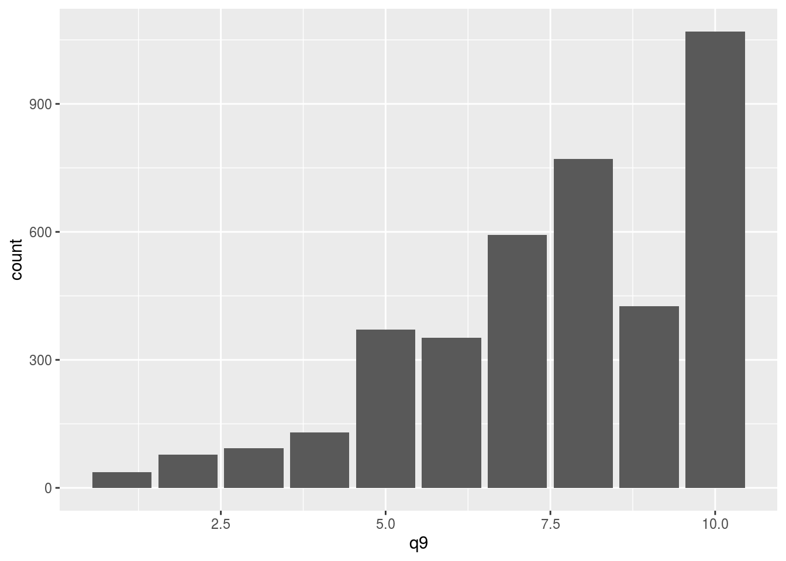
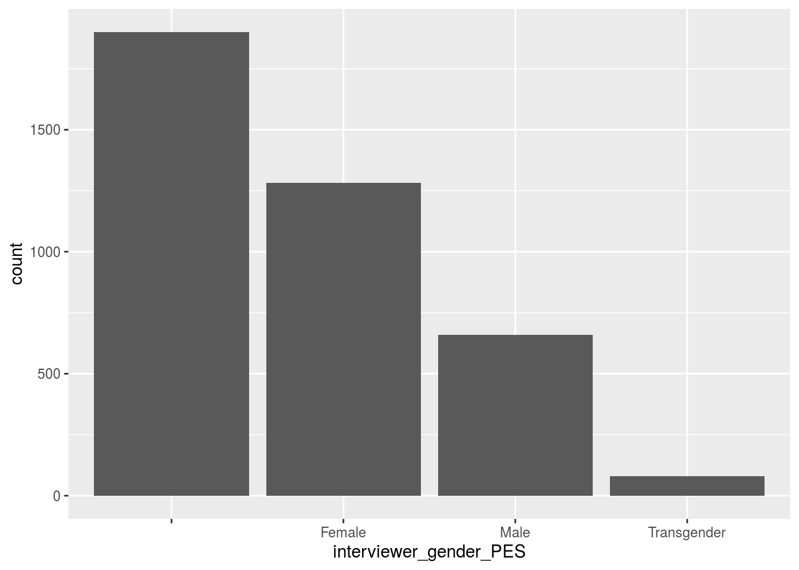

Abstract
“We investigate the 2019 Ces data and perform calculation, statistical conclusion from the data on if the data is reliable.”
Introduction
The report is based on the data of how people vote for federal elections from the Ces.The report mainly interpreted on two important variables: gender and interest on votes. It is ranged (0-10) and reason is it is very important to know people’s interest on how much interest they have on the voting for election because people may vote for anyone if they are not interested in voting. The second variable is gender which includes four types of people, male, female, transgender and people who doesn’t want to answer. There are two bar graphs base on these two variables to see if the data is spread equally and see if the result is fair enough to be reliable.
## # A tibble: 1 x 3
## `mean_interest <- mean(q9)` `lowest <- min(q9)` `median_interest <- median(q9…
## <dbl> <dbl+lbl> <dbl>
## 1 7.60 1 [(1)] 8

Graph discussion
There are two bar graphs, which is based on how much people have interest in voting for federal election and their gender. The first graph is about the interest on voting for federal election, and the graph shows there are lots of people who enjoys voting for election which would be the ideal situation.The second graph is the gender of the people who votes for the election and there are few transgender people, and the female percentage is higher than male. However, there are still lots of people who hasn’t given their gender, it would be the majority of these groups of people. # Main discussion From the above, it is revealing that the election result are quite accurate since there are lots of people who are interested in voting for federal election. Those who aren’t interested are still exist but they are minority which still makes a good election results at the end. However, the graph of gender reveals there are more female than male which may influence the result. For example, if the women are the majority, what if they have basic instincts to just vote for women candidates? There are lots of differences between female and male, it would be best if they are equally distributed and not one of them is represented as the majority. However, there’s still some amount of possibility that the graph would be look different if the person who didn’t admit their gender could fulfill the survey. The transgender group in Canada are very less as compared to female and male, so it is fine at this point if the transgender people are less on voting because there are less transgender people in Canada.
Weakness and next steps
There are many weaknesses in this survey since it is from phone.people may not answer it very accurately, and may just put down any answers they want which would let data not reliable to represent any conclusion. Also, the survey is by the phone, which means the people who don’t have phone would not be considered which would take out many canadians. The other things could be the survey’s sample size is still too small as compared to a whole country of people. There are still large amount of people who ignore phone survey. The next step could be developed by in person maybe. That would result a more reliable data than phone survey. And take larger sample.
Reference
-JJ Allaire and Yihui Xie and Jonathan McPherson and Javier Luraschi and Kevin Ushey and Aron Atkins and Hadley Wickham and Joe Cheng and Winston Chang and Richard Iannone (2020). rmarkdown: Dynamic Documents for R. R package version 2.3. URL https://rmarkdown.rstudio.com. -Hadley Wickham, Jim Hester and Winston Chang (2020). devtools: Tools to Make Developing R Packages Easier. R package version 2.3.2. https://CRAN.R-project.org/package=devtools -Tierney N (2017). “visdat: Visualising Whole Data Frames.” JOSS, 2(16), 355. doi: 10.21105/joss.00355 (URL: https://doi.org/10.21105/joss.00355), <URL: http://dx.doi.org/10.21105/joss.00355>. - Paul A. Hodgetts and Rohan Alexander (2020). cesR: Access the CES Datasets a Little Easier.. R package version 0.1.0. - Elin Waring, Michael Quinn, Amelia McNamara, Eduardo Arino de la Rubia, Hao Zhu and Shannon Ellis (2020). skimr: Compact and Flexible Summaries of Data. R package version 2.1.2. https://CRAN.R-project.org/package=skimr